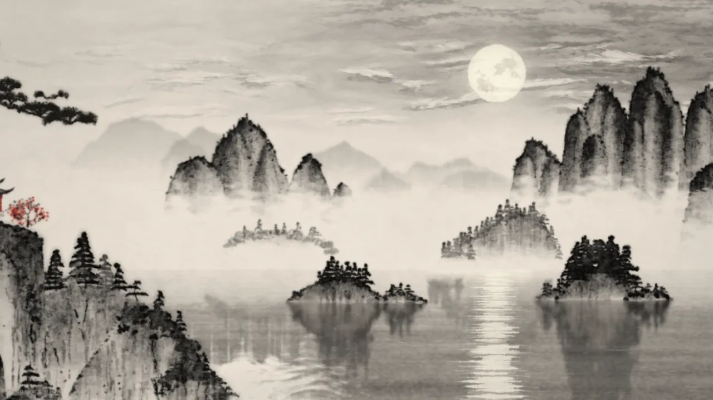
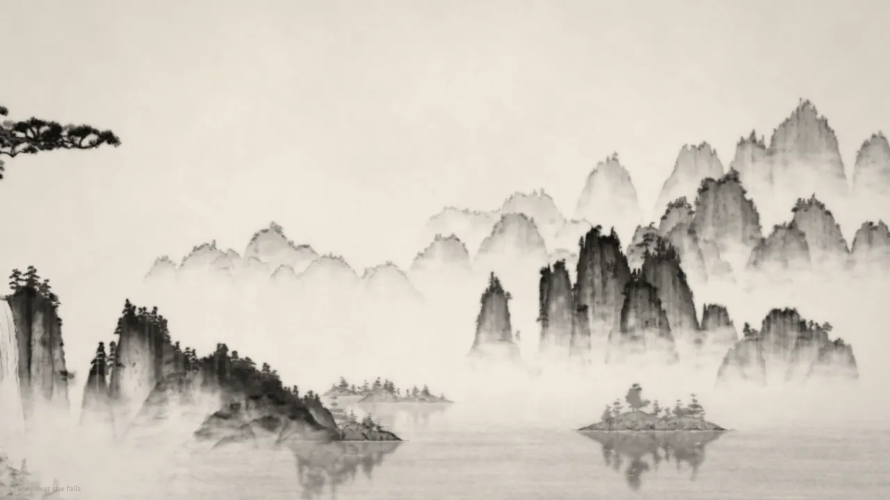
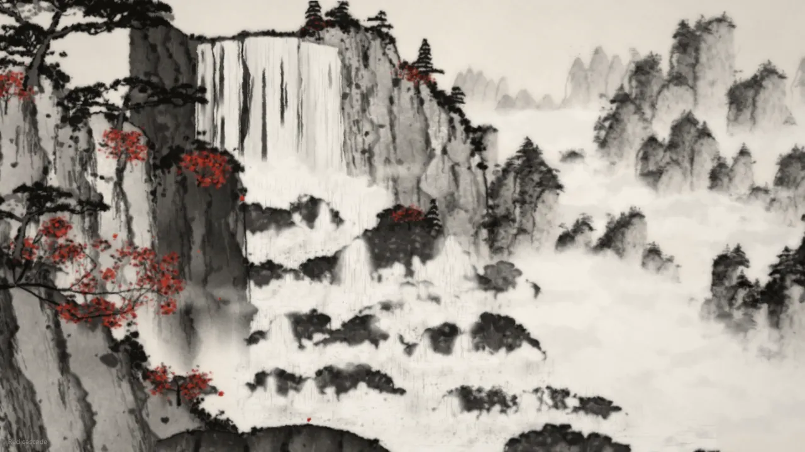
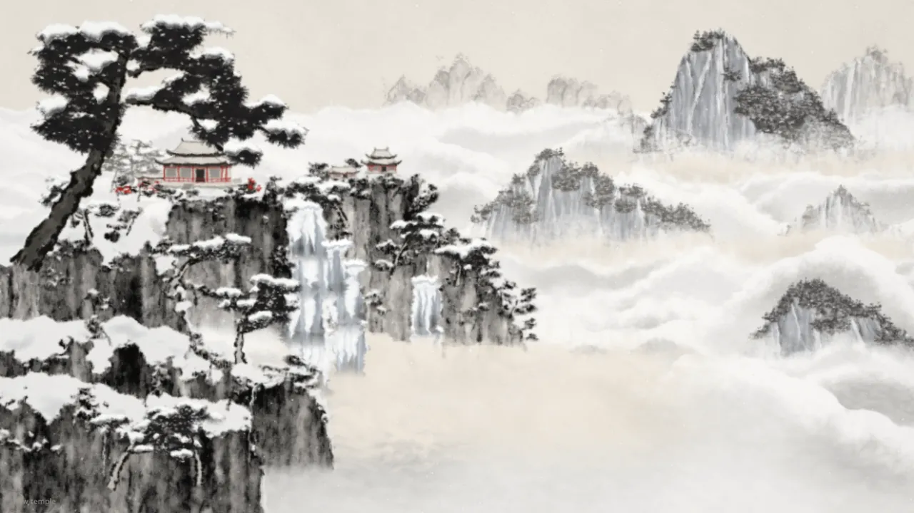

数据通过公开 GitHub API 获取，时间 2026-10-20 13:40（UTC+8）。仓库建于 2026-10-19 21:11（UTC+8），3 个提交（首版 → 两轮“quality round”），最后推送 2026-10-20 02:51（UTC+8）；Releases 有 v1–v3 三版成片（v3 约 125 MB，1920×1080/60 fps，本站未下载）。src/ + tools/ 约 2.5 万行 JS，运行时零第三方依赖（开发依赖仅 puppeteer-core 与 ws，用于离线渲染）。

node tools/serve.mjs 后用无头 Chrome（SwiftShader 软件 WebGL）打开 ?scene=s03&t=3 截图（2026-10-20），压缩为 WebP。它是什么
“山水”（shan shui）即中国山水画。这个仓库做的不是“无限生成器”，而是一部导演过的短片：十幅画，每幅都对着一张参考画逐区域“临摹”，再让画面里的东西都动起来，比如云雾流动、瀑布落下、松竹摇摆、白鹤飞过、枫叶和雪飘落、湖面倒影起涟漪，然后用十种转场把它们串成 60 秒，最后盖上一方印章，画面“蒸发”回白纸。
作者在 README 里的原话是：No images, textures, fonts or audio samples are loaded anywhere.
（任何地方都不加载图片、纹理、字体或音频采样。）参考画只用于比对工具，不在仓库里，也从不参与渲染。
| 时间 | 画 | 进场转场 |
|---|---|---|
| 0:00 | 竹谷 bamboo valley | 从白纸上“自己画出来”，最浓的墨先出现 |
| 0:06 | 瀑上鹤 cranes over the falls | 一层谷雾 |
| 0:12 | 索桥 rope bridges | 雾扫过群峰 |
| 0:18 | 浮峰 floating peaks | 镜头穿云上升 |
| 0:24 | 红瀑 red cascade | 推进穿过瀑布水雾 |
| 0:30 | 秋墟 autumn ruins | 一阵枫叶风 |
| 0:36 | 金河 golden river | 手卷展开，雾气衔接 |
| 0:42 | 石桥红日 stone bridge, red sun | 金色太阳滑到红日的位置 |
| 0:48 | 湖上月 moon over the lake | 夜色顺着湿纸渗下来 |
| 0:54 | 雪寺 snow temple | 湖上雪越下越密 |
| 0:57 | — | 盖印，画面蒸发回纸 |
工作原理
1. 2.5D 视差卡片：一幅画 = 一叠有深度的纸片
引擎（src/engine/engine.js）是一个 WebGL2 合成器。每幅画由“从后到前”的图层组成，每层是一张放在深度 z 处的平面卡片：z = 1 是画面最前景，2–4 是中景，6–15 是远山，1e5 是天空/纸面（永不移动）。摄像机只有平移、推拉（dolly）、变焦和滚转，投影公式写在文档里：
screen = C + ((P - C) * z - [x, y]) / (z - dolly) * zoom于是镜头平移 x 像素，最前景卡片移动 x，z = 4 的卡片只移动 x/4，前景松树、中景山峰、远山之间就有了真实视差。代价是“超扫描”：近景卡片要比画框多画出 8–15%，转场会偏移镜头的地方（例如穿云上升时 y 方向 −260）还要再多留约 300 px。
2. 三种图层：一次烘焙的笔墨、每帧计算的着色器、每帧重画的 Canvas
api.bakeCanvas：用 Canvas2D 把静态笔墨（崖石、松树、楼阁）画一次烘焙成纹理。api.shader：每帧执行的 GLSL 程序卡片（雾、云、水面、瀑布），噪声坐标钉在“世界”里，所以随深度正确视差。api.canvas：每帧重画的小 Canvas（鹤、落叶、雪），矩形要尽量紧，因为每帧都要上传。
贴图卡片还能挂两种“物理”：sway（离锚点越远位移越大的风摆，松树典型值振幅 3–6 px、0.15–0.3 Hz）和 reflect（在水线下画一份镜像、加涟漪和亮条打断的倒影）。
3. 笔：有压力曲线的笔触与飞白
src/lib/brush.js 是“画家的词汇”的底层：Catmull-Rom 平滑路径，沿路径按“压力曲线”变宽变窄，左右两侧加随机抖动后填成多边形。不同笔法就是不同的曲线：
export const PROFILE = {
brush: (s) => Math.pow(Math.max(0, Math.sin(Math.PI * (0.07 + 0.93 * s))), 0.5) * (1 - 0.2 * s),
needle: (s) => Math.pow(1 - s, 0.8) * Math.min(1, s * 8 + 0.4),
leaf: (s) => Math.pow(Math.sin(Math.PI * Math.pow(s, 0.75)), 0.9),
...
};dryStroke 把一笔拆成很多根“笔毛”，用噪声决定哪里断墨，而且笔锋两边先干（dryEdge = Math.abs(off) * 2），越往笔尾越干，这就是飞白。此外还有苔点 dots、带湿边的淡墨 wash、纸纹侵蚀 granulate。调色板是从参考画里实测的：纸色 [239, 231, 220]，暖黑墨 [11, 9, 6]，朱砂 [178, 46, 32]；用 tone(v) 在墨与纸之间取色，0 是焦墨，1 是纸。
4. 墨：inkify，让干净的矢量“洇进宣纸”
Canvas2D 画出来的笔画边缘太干净。src/lib/inkfx.js 在烘焙后跑一次 GPU 后处理：在像素周围两圈采样求模糊后的 alpha，据此做三件事：
- 湿边：边界内侧的像素压暗，模拟颜料在笔画边缘积聚；
- 颗粒：用多层 value noise 打散中间调的 alpha，模拟墨沉进纸纹；
- 晕染：笔画外侧加一圈淡淡的晕，模拟墨被纸吸开。
// wet edge: interior pixels near the boundary get darker (pigment pools at the rim)
float rim = clamp((c.a - ab) * 2.5, 0.0, 1.0) * c.a;
col *= 1.0 - uEdge * rim * 0.6;
// granulation: pigment settles into paper tooth -> alpha breaks up in mid-tones
float mid = 4.0 * c.a * (1.0 - c.a);
float a = c.a * (1.0 - uGran * (g - 0.35) * (0.6 + mid));全片最后还有一道统一后期：屏幕空间的纸纤维纹理（墨越浓越明显）、调色、暗角，以及 TPDF 抖动，防止柔和雾气渐变出现色带。
5. 构图：把画论写成规则和数字
docs/STYLE.md 是这个项目最值得抄的部分。它把山水画的经验写成了可检查的规则：
- 三远：近景一侧最黑最锐利，中景灰，远山淡且几乎无细节；每个深度层之间用雾（就是纸色）隔开，山脚化进白里。
- 空气透视的明度阶梯：近景到真黑（rgb≈10），中景顶部 35–55% 色调，远山 65–85%；而且“纸占主导”，画面中位亮度在 180–219。
- 边缘承担造型：山石顶部用略毛的干笔深轮廓，向下淡入雾中；内部是竖向皴笔、留白的受光面和沿脊线的苔点。
- 树是词汇不是噪声；红色要省（小于 2% 的像素）；“看起来假”的清单：干净矢量渐变、规则重复、满屏中灰、饱和色与辉光、没有笔法逻辑的 fbm 斑块。
- 运动也有数字：雾 5–25 px/s，松竹梢 1–5 px、0.15–0.35 Hz，瀑布 150–400 px/s，鹤振翅 0.8–1.1 Hz，镜头每幅推拉不超过约 0.08。
每幅画还有一张按设计坐标（1920×1080）写的“元素地图”，例如 s03：月亮在 (1325, 225)、半径约 85，湖面从 y 640 开始，x≈1320 处一条长长的月光光柱。场景代码就照着这张图摆放元素，再用 tools/still.mjs --compare / --side / --crop 和参考画逐块对比。
6. 确定性：每一帧都是 t 的纯函数
场景契约规定：动画只能是场景本地时间 t 的纯函数，不允许跨帧保存状态，不允许 Math.random 和 Date，随机全部来自构建时的带种子 api.rng(seed)。因为转场会和前后场景重叠，每个场景必须在 t ∈ [-3, 14] 内都能正确、连续地渲染。这样任意一帧都能单独渲染，也才能做多采样运动模糊（--samples）。
export default {
id: 's03', title: 'Moon over the lake', ref: '03',
build(api) { // 只跑一次，可 async
const layers = [ /* back to front */ ];
return { layers, camera: (t) => ({ x: 0, y: 0, dolly: 0.02 * t, zoom: 1, roll: 0 }), grade: {...} };
},
};7. 转场与统一时钟：画面和声音共用一个节拍器
src/timeline.js 定下 80 BPM、4/4：一拍 0.75 s，一小节 3 s，每幅画两小节，每个转场都以小节线为中心。转场是 GLSL 片段，拿到前后两个场景 sA / sB 各自混合。比如开场的“墨晕”（bloom）：用画面暗度和到两个种子点的距离合成一个值，阈值随进度从 1.2 扫到 −0.05，于是最浓的墨先出现，带一道湿润的前沿向外漫开；结尾的“蒸发”反过来，淡墨先消失，焦墨最后。
float dark = 1.0 - smoothstep(0.08, 0.93, luma(b)); // 1 = black ink, 0 = paper
float d = min(length(p - uC), length(p - uC2) * 1.1) + w;
float v = mix(1.0 - d / 2200.0, dark, uK.w * 0.5) + dark * 0.35;
float th = mix(1.2, -0.05, pow(uP, 0.9)); // threshold sweeps the value range其余转场各有画面逻辑：“日匹配”让第七幅的金色太阳滑到第八幅红日的位置，再从太阳向外晕开；“喷雾”推进第四幅的瀑布，从第五幅的瀑布里出来；“手卷”横向平移，让第六幅和第七幅像同一卷画的前后两段。
8. 声音：从零合成的古筝、箫与颂钵
tools/audio.mjs 用同一个时钟写配乐：可变延迟的 Karplus-Strong 古筝（推弦、揉弦、扫弦、泛音，外加拨弦瞬态和琴身共鸣）、带气声的箫、寺院颂钵、低音持续音和跟随画面的环境声（风、水），最后母带到 −14 LUFS、真峰值 −1.5 dBTP，输出 48 kHz/24-bit WAV。CUE 表把“落叶风起”（28.65 s）、“盖印”（56.7 s）这些时刻同时交给画面和声音。
9. 离线渲染：GPU 上转 YUV，直接灌进 ffmpeg
tools/render.mjs 用 puppeteer-core 驱动无头 Chrome 在 GPU 上逐帧渲染，在着色器里转成 YUV 4:2:0，经 WebSocket 流给 ffmpeg（x264，BT.709）。除了最终 MP4，什么都不落盘。文档给的性能预算是：1080p 每帧小于 40 ms（目标显卡是 Radeon 780M 核显），每个场景构建小于 4 s。
快速上手
1. 浏览器里实时看（只需 Node 20+；实时查看器不依赖 npm 包，npm install 装的是离线渲染工具）：
git clone https://github.com/Leonxlnx/shanshui
cd shanshui
npm install
npm run serve # 或 node tools/serve.mjs --port 8080
# 打开 http://127.0.0.1:8080/ 整部影片实时播放
# http://127.0.0.1:8080/?scene=s03 单独一幅（s01..s10），&t=3 指定起始时间，&scale=1 全 1080p快捷键：空格暂停，左右方向键切画，F 全屏，M 播放配乐（需先生成）。
2. 生成配乐并渲染成片（需要 Chrome/Edge 和 PATH 里的 ffmpeg）：
node tools/audio.mjs # -> out/audio/soundtrack.wav
node tools/render.mjs --out out/shanshui.mp4 --audio out/audio/soundtrack.wav --samples 23. 单帧与对比：node tools/still.mjs --scene s03 --t 2 --out out/s03/a.png；--sheet 0,2,4,6,8:out/sheet.png 出时间轴接触表；--scene lab/pine-01 渲染 src/lab/ 下的单元素实验场景。对比参数需要你自己把参考图放进 ref/01.webp … ref/10.webp。
本站实测（2026-10-20）：没装任何依赖，直接 node tools/serve.mjs 起服务，再用无头 Chrome 的软件 WebGL（SwiftShader）打开单幅画面，每幅约 35 秒出图，效果和 README 描述一致。截图完成后已删除克隆目录与临时文件。
展示



以上均为本站本地运行项目后用无头 Chrome 自行截取（2026-10-20，?scene=…&t=3，1280×720 WebP），软件 WebGL 渲染、未开运动模糊，细节可能略逊于作者的 GPU 成片。仓库自带的 docs/stills.jpg 和 Releases 里的视频本站未转载，请到原仓库观看。
项目结构
| 路径 | 体量 | 作用 |
|---|---|---|
src/engine/ | 4 个文件 | engine.js 合成器（视差卡片、烘焙、倒影、风摆、调色、YUV 回读）、gl.js、glsl.js（共享噪声与墨函数）、rng.js（带种子随机数 + JS 噪声） |
src/lib/ | 约 460 KB | 画家词汇：brush / inkfx / pine / rock / peaks / atmos（雾与云）/ water（水与瀑布）/ architecture / fauna（鹤、落叶、雪）/ flora（竹、枫）/ seal |
src/scenes/ | 10 幅 + 注册表 | s01-cranes-falls.js … s10-autumn-ruins.js，每幅一个同名子目录放专属助手（如 s09/peaks.js 68 KB） |
src/transitions/ | 1 个文件 | bloom、mist、cloudrise、spray、wind、scroll、sunmatch、dusk、snow、evaporate 共 10 种 GLSL 转场 |
src/timeline.js / film.js | — | 统一时钟与镜头表；转场、叠加层、子帧运动模糊 |
src/lab/ | 43 个 | 单元素实验场景（松、石、峰、水、雾、建筑、动物），不注册进影片 |
tools/ | 8 个 | serve、still（单帧/对比/接触表）、daemon（常驻渲染器，端口 7781）、render（成片）、audio（配乐）、forensics（帧取证）、libdoc（生成元素索引） |
docs/ | 4 篇 | ENGINE.md（API）、STYLE.md（调色与画法规则）、FILM.md（剪辑）、LIBRARY.md（元素索引） |
一个值得注意的细节：ENGINE.md 写着 many agents can work at once without touching shared files
（多个 agent 可同时工作而不碰共享文件），还有 Look at your outputs with the Read tool (it shows images)
（用 Read 工具看你的输出，它能显示图片）。这说明这些文档是写给编码 agent 看的工作手册。我们据此推测：这个项目很可能是人类导演、多个 agent 并行“对着参考画临摹”做出来的。仓库本身没有明说。
与前作的关系
说到代码生成的山水，绕不开 LingDong（黄令东）2018 年的 shan-shui-inf（MIT，约 6.4k stars）：用噪声和程序规则在 SVG 里生成一幅可以无限横向滚动的长卷，每次都不一样。本仓库没有在 README 或文档里提到它，代码也看不出复用关系；两者的路线几乎相反：
| shan-shui-inf（2018） | Shanshui（2026） | |
|---|---|---|
| 目标 | 无限、随机、每次不同的长卷 | 十幅固定构图的“导演版”影片 |
| 构图来源 | 程序规则 + 噪声 | 对着参考画逐区域临摹，按元素地图摆放 |
| 渲染 | 浏览器 SVG 矢量线条 | WebGL2 合成 + Canvas2D 笔墨烘焙 + GLSL 墨韵后处理 |
| 时间 | 静态（滚动浏览） | t 的纯函数，60 fps 动画、转场、配乐，离线出片 |
| 风格 | 线描为主，类似白描长卷 | 浓淡墨、湿边、颗粒、飞白、雾，接近写意设色小品 |
可以这样理解：shan-shui-inf 回答“程序能不能生成山水”，Shanshui 回答“代码能不能拍出一部像样的水墨短片”。
对我们的启发
- 代码即影片的完整样板。确定性
render(t)、统一 BPM 时钟、转场骑在小节线上、GPU 转 YUV 直灌 ffmpeg、代码合成配乐，和 Opus 5.5 动效手册里的“渲染契约”一一对应。差别在于它是一部 60 秒、十场景的“长片”，证明这套方法能扩展到复杂美术。 - 把风格写成可检查的规则。
STYLE.md的实测调色板、明度百分位、红色占比小于 2%、“看起来假”的清单和运动速度表，可以直接改写成我们的中国风MG 风格条目或风格 skill，让“水墨感”从形容词变成数字。 - 先建词汇库，再拼场景。
src/lib是可复用的松、石、峰、雾、水、建筑、鹤，src/lab是每个元素的单独测试场景，并行开发互不冲突。做系列片时，这比每个场景从头写更稳。 - “临摹—比对”循环。有参考图时，用
--compare/--crop在 1:1 裁切上对比，原话是that is where painterly quality is won or lost
（画意的成败就在这里）。这和让模型看自己渲染帧的评审循环是同一个思路，参考 Opus 5.5 动效实验室。 - 中国视觉风格的转场语言。墨晕、湿纸渗色、手卷平移、日匹配、盖印后蒸发，这些转场都来自媒介本身，不是通用的溶解或擦除，可以和 七里香 MV 这类中文审美作品对照着看。
- 和 ASCII 渲染对照。ascii-sharks 把连续几何“采样成字符”，这里把干净矢量“洇成墨”：都是先有几何，再加一层媒介化后处理。纹理都要钉在世界坐标或物体上，不能钉在屏幕上。
相关阅读：ascii-sharks · 15 种 MG 风格 · hohomngkj skill 库 · Opus 5.5 动效手册 · 设计资源大赏 · Opus 5.5 视频大赏 · Prompt Motion 画廊
附录：README 全文中文翻译
仓库采用 MIT 许可（Copyright (c) 2026 Leonxlnx），以下为 README.md 的全文翻译（截至提交 b5357c0）。原文中的配图 docs/stills.jpg 未转载，以文字说明代替。许可声明原文附在本节末尾。
Shanshui
十幅中国水墨山水（shan shui，“山与水”），完全用代码绘制并赋予动画，剪成一部一分钟的影片。
［配图：十幅画的静帧，见原仓库
docs/stills.jpg］任何地方都不加载图片、纹理、字体或音频采样。每一根松针、每一面崖壁、每一片雾、每一只鹤、每一圈涟漪、每一片雪花，以及结尾的印章，都在运行时用 WebGL2 着色器和 Canvas2D 笔触生成。配乐（古筝、箫、颂钵、风声和水声）在 JavaScript 里逐个采样合成。
影片附在 releases 中。
影片
一分钟，十幅画，一个时钟：80 BPM，每幅画两小节，每一道接缝都以小节线为中心。
画 如何到来 0:00 竹谷 从空白的纸上自己画出来，最浓的墨先出现 0:06 瀑上鹤 一层谷中薄雾 0:12 索桥 雾气扫过群峰 0:18 浮峰 镜头穿过云层上升 0:24 红瀑 推进穿过瀑布的水雾 0:30 秋墟 一阵卷着枫叶的风 0:36 金河 画卷展开，雾气相接 0:42 石桥，红日 金色的太阳滑到红色的太阳上 0:48 湖上月 夜色透过湿纸渗下来 0:54 雪寺 湖上的雪越下越密 0:57 印章落下；画面蒸发，回到纸上 实时观看
npm install npm run serve打开打印出的地址：影片在浏览器中实时播放（
?scene=s03只显示一幅画，?scale=1以完整 1080p 渲染）。空格暂停，方向键在画之间跳转；生成配乐之后，按 M 播放配乐。渲染成片
node tools/audio.mjs # 配乐 -> out/audio/soundtrack.wav node tools/render.mjs --out out/shanshui.mp4 --audio out/audio/soundtrack.wav --samples 2帧由无头 Chrome 在 GPU 上渲染，在着色器中转换为 YUV 4:2:0，直接流入 ffmpeg（x264，BT.709）；除了最终的 MP4，没有任何东西写到磁盘上。需要 Node 20+、Chrome 或 Edge，以及 PATH 中的 ffmpeg。
它是怎么构建的
src/engine/ WebGL2 合成器：2.5D 摄像机前的视差卡片、烘焙、倒影、风摆、调色、YUV 回读 src/lib/ 画家的词汇：笔触与墨效、松、石、峰、雾与云、 水与瀑布、建筑、鹤、落叶与雪、竹与枫、印章 src/scenes/ 十幅画，每幅都有自己的辅助模块 src/transitions/ 画与画之间的接缝 src/timeline.js 画面与声音共用的一个时钟 src/film.js 镜头表、转场、叠加层、子帧运动模糊 src/lab/ 展示库中单个元素的小场景 tools/ 静帧与对比、接触表、常驻渲染守护进程、影片渲染器、配乐、帧取证 docs/ ENGINE.md（API）、STYLE.md（调色板与绘画规则）、FILM.md（剪辑）、LIBRARY.md（元素索引）每幅画都是一叠从后到前的图层，分别放在同一台摄像机前的不同深度上，因此缓慢的镜头运动会在前景松树、中景山峰和远处山脉之间产生真实的视差。静态笔墨只烘焙一次成纹理，再经过一道墨效处理：让颜料在边缘积聚，并沉入纸纹形成颗粒。雾、云、水、瀑布、雪、鹤和落叶每一帧都作为时间的纯函数绘制，因此任何一帧都可以单独、确定地渲染出来。
这些画是逐区域对照一幅参考画构建出来的；参考图不在本仓库中，因此
tools/still.mjs的对比选项（--compare、--side、--crop）需要你自己把图片放到ref/01.webp…ref/10.webp。许可
MIT
MIT 许可声明原文（LICENSE）
MIT License
Copyright (c) 2026 Leonxlnx
Permission is hereby granted, free of charge, to any person obtaining a copy
of this software and associated documentation files (the "Software"), to deal
in the Software without restriction, including without limitation the rights
to use, copy, modify, merge, publish, distribute, sublicense, and/or sell
copies of the Software, and to permit persons to whom the Software is
furnished to do so, subject to the following conditions:
The above copyright notice and this permission notice shall be included in all
copies or substantial portions of the Software.
THE SOFTWARE IS PROVIDED "AS IS", WITHOUT WARRANTY OF ANY KIND, EXPRESS OR
IMPLIED, INCLUDING BUT NOT LIMITED TO THE WARRANTIES OF MERCHANTABILITY,
FITNESS FOR A PARTICULAR PURPOSE AND NONINFRINGEMENT. IN NO EVENT SHALL THE
AUTHORS OR COPYRIGHT HOLDERS BE LIABLE FOR ANY CLAIM, DAMAGES OR OTHER
LIABILITY, WHETHER IN AN ACTION OF CONTRACT, TORT OR OTHERWISE, ARISING FROM,
OUT OF OR IN CONNECTION WITH THE SOFTWARE OR THE USE OR OTHER DEALINGS IN THE
SOFTWARE.